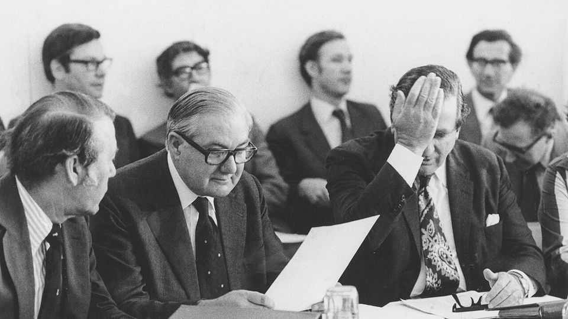
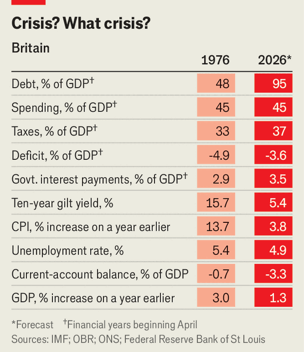

Lessons from Britain’s humiliating IMF bail-out
Fifty years on, a fiscal crisis would play out very differently

Oct 15th 2026
The similarities between 1976 and 2026 are eerie. Then as now the spectre of decline haunted Britain, its economy troubled by energy crises, inflation and a lack of competitiveness. In both years the embattled Labour Party appointed a new prime minister, despite having won office only two years before. And both leaders then chose chancellors called Healey.
As John Healey, today’s chancellor, prepares for the budget on October 28th, he might well worry that he will suffer the fate of Denis Healey, his predecessor in 1976. On September 28th that year, the earlier Healey was about to board a plane when sterling’s freefall forced him to turn back and apply for an emergency loan from the IMF. A $3.9bn bail-out, agreed upon in December, imposed on the birthplace of the industrial revolution the sort of humiliating conditions normally reserved for the world’s sketchiest economies.
Kemi Badenoch, the Conservative leader, warned last year that the government was on track once again to go cap in hand to the IMF. There are superficial echoes of 1976. Then investors revolted, refusing to buy British government bonds (or “gilts”) unless they offered much higher yields. Today’s bondholders charge Britain more to borrow than any other G7 country.

But though Britain can learn much from 1976, another trip to the IMF is unlikely. Things are nowhere near as bad today. Inflation was 13.7% in 1976; the IMF reckons it will be 3.8% this year. Ten-year gilt yields, then 15.7%, are now 5.4% (see table). And the economy was in another era. Marginal tax rates hit 98%. The government struck economy-wide wage deals with the unions. The Labour conference of 1976 passed a motion calling for the nationalisation of the country’s biggest four banks and seven insurance companies.
Most importantly, Britain managed its currency very differently 50 years ago. At the beginning of March 1976 £1 was worth $2.02; by October it had fallen to $1.57, driven by Britain’s embarrassing mismanagement of its economy. The Bank of England tried, and failed, to prop up the value of sterling by selling its foreign-currency reserves. In June it borrowed more from other central banks. And when those debts came due in December, Healey was forced to turn to the IMF.
The government is now happier to let the pound float freely on currency markets, making a repeat of the IMF drama improbable. But that does not mean Britain is out of the woods. Today a fiscal crisis would take a different form. Britain’s debt-to-GDP ratio is 95%, nearly double its level in the 1970s. Growth is much slower, leaving the country more exposed to sudden changes in market sentiment.
A crisis in 2026, therefore, might start in the gilt market. The government has two defences against things spiralling out of control: a plan for cutting the deficit and an independent central bank charged with keeping inflation down. But if either were doubted, yields could surge. This could start a vicious cycle, in which soaring borrowing costs worsened the public finances and in turn sent yields even higher. So might a jump in volatility elsewhere, since global markets are now far more complex and interconnected than in 1976.
To guard against such a crisis, Mr Healey should learn from his predecessor. The first lesson is the importance of flexibility. In 1976 it was not just that officials tried to resist changes to exchange rates. Unions refused to accept real-terms pay cuts, fuelling inflation and deepening the crisis. Flexible labour and currency markets give the economy shock absorbers.
Mr Healey also needs to ensure that investors really believe he will cut the deficit. Denis Healey grumbled that the 1976 crisis was avoidable: his spending cuts were working and only pessimistic forecasts spooked markets. He had a point, since spending came in below forecast, but the panic still caused real damage. Credibility in markets matters in itself, especially for Britain, which runs a current-account deficit (as in 1976) and relies on the kindness of flighty strangers to fund itself.
The IMF crisis wounded British pride. But it also gave Denis Healey an external constraint—the IMF—that helped enforce much-needed spending cuts against the will of many backbenchers. As Lord Macpherson, a former Treasury permanent secretary, puts it: “The only time the British state gets a grip on anything is when it is staring into the abyss.” Spending today is already 45% of GDP, as in 1976, and an ageing, sicker population will add to the strain. A crisis might be the only way to force John Healey or his successors to make tough but necessary choices. ■